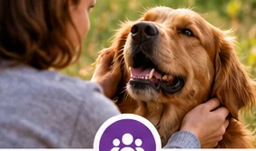
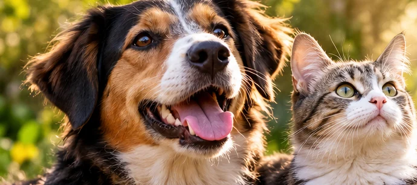
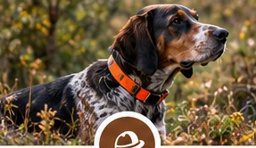
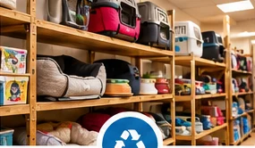
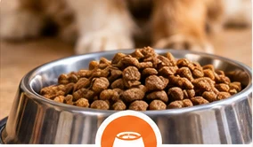
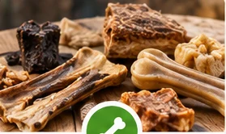

Écouter et orienter
Parce qu’une difficulté ne doit pas rester sans réponse, nous voulons aider chacun à trouver des pistes et des professionnels adaptés à sa situation.
Parce que nos animaux occupent une place précieuse dans nos vies, leur bien-être mérite toute notre attention. Le Relais des Compagnons veut proposer une approche concrète, humaine et de proximité.
Notre objectif : prévenir plutôt que subir, accompagner plutôt que juger, et contribuer à préserver le lien qui vous unit à votre animal. La recyclerie et les ventes soutiendront les actions associatives.

Le Relais des Compagnons souhaite agir avant que les difficultés ne s’aggravent : mieux informer, mieux orienter, mieux accompagner.

Parce qu’une difficulté ne doit pas rester sans réponse, nous voulons aider chacun à trouver des pistes et des professionnels adaptés à sa situation.

Un problème de comportement, une incompréhension ou une difficulté financière peuvent fragiliser la relation avec un animal. Notre objectif est d’agir en amont.

Grâce à la recyclerie solidaire et à des produits utiles au quotidien, les dons et les achats peuvent soutenir les actions de l’association.
Le site doit parler à tous les propriétaires d’animaux, pas uniquement aux situations de grande difficulté. Le Relais souhaite être utile, accessible et compréhensible.


Accompagnement : écoute, conseils, orientation et prévention.
Recyclerie solidaire : donner une seconde vie à du matériel animalier.
Produits utiles : alimentation, friandises et articles du quotidien dans un esprit d’accessibilité et de solidarité.
Parce qu’aider un propriétaire, c’est aussi prendre soin de son animal. Et parce qu’en territoire rural, la proximité, le bon sens et l’entraide comptent souvent autant que l’offre elle-même.
Le questionnaire du site sert justement à mieux comprendre les besoins réels des personnes qui vivent autour de Sauvat, Ydes, Bort-les-Orgues et des communes voisines.
Donner son avisLe Relais des Compagnons s’inscrit d’abord dans une logique de proximité. Le site doit donc permettre d’identifier si les réponses viennent bien du secteur concerné.
C’est pour cela que le questionnaire demande désormais la commune. Ce repère nous aide à savoir si la personne se situe réellement dans une zone où le Relais pourrait lui être utile.
Sauvat constitue le point d’ancrage affiché sur le site.
Ydes et Bort-les-Orgues sont mentionnées clairement pour situer le projet dans son environnement proche.
Important : internet peut attirer des réponses venant de très loin. La commune devient donc un repère utile pour distinguer les habitants du secteur des visiteurs occasionnels.
Ce questionnaire aide à mieux cerner les attentes locales. La commune est demandée pour situer votre secteur. Les coordonnées de contact restent facultatives.
À savoir : la commune est maintenant obligatoire. Elle sert uniquement à repérer si votre réponse provient de la zone concernée par le projet.